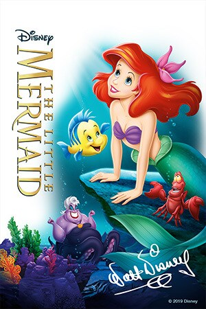
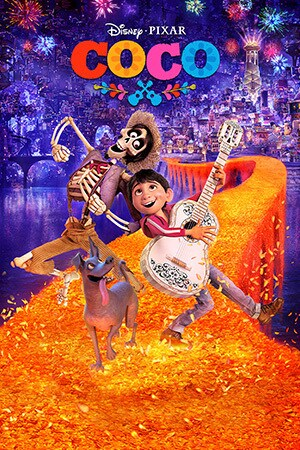
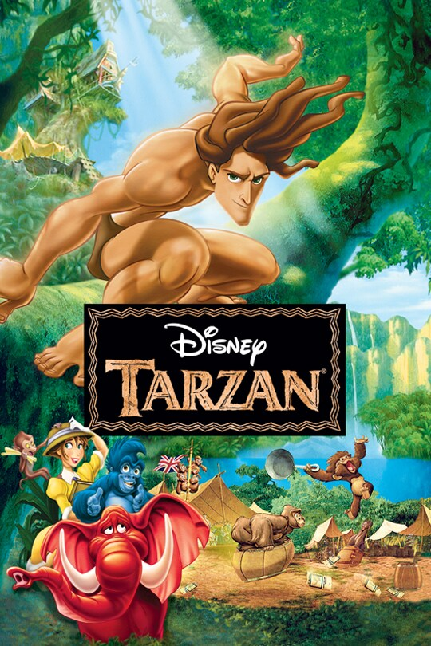
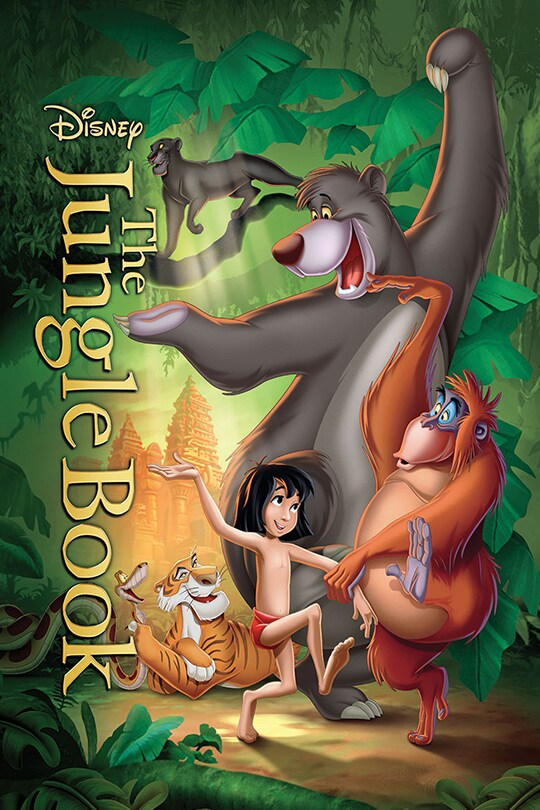
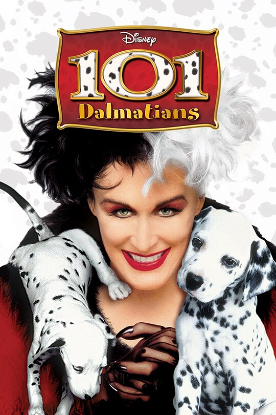

-

The Lion King
Rating: PG
Runtime: 1h 58min
Date: July 19, 2019
Genre: Action, Action-Adventure, Drama, Family, Musical
Disney’s film journeys to the African savanna where a future king is born. Simba idolizes his father, King Mufasa, and takes to heart his own royal destiny. But not everyone in the kingdom celebrates the new cub’s arrival. Scar, Mufasa’s brother—and former heir to the throne—has plans of his own. The battle for Pride Rock is ravaged with betrayal, tragedy and drama, ultimately resulting in Simba’s exile. With help from a curious pair of newfound friends, Simba will have to figure out how to grow up and take back what is rightfully his. The all-star cast includes Donald Glover as Simba, Beyoncé Knowles-Carter as Nala, James Earl Jones as Mufasa, Chiwetel Ejiofor as Scar, Seth Rogen as Pumbaa and Billy Eichner as Timon, and utilizes pioneering filmmaking techniques to bring treasured characters to life in a whole new way.
Directed By: Jon Favreau
Written By: Jeff Nathanson
Produced By: Jon Favreau, Jeffrey Silver, Karen Gilchrist
Cast: Donald Glover, Seth Rogen, Chiwetel Ejiofor, Alfre Woodard, Billy Eichner, John Kani, John Oliver, Florence Kasumba, Eric André, Keegan-Michael Key, JD McCrary, Shahadi Joseph, Beyoncé Knowles-Carter, James Jones, Penny Johnson Jerald, Amy Sedaris, Chance Bennett, Josh McCrary, Phil LaMarr, J. Lee
-

Frozen
Rating: PG
Runtime: 1h 42min
Release Date: November 27, 2013
Genre: Animation, Adventure, Comedy, Family, Fantasy, Musical
Walt Disney Animation Studios, the studio behind "Tangled" and "Wreck-It Ralph," presents "Frozen," a stunning big-screen comedy adventure. Fearless optimist Anna (voice of Kristen Bell) sets off on an epic journey—teaming up with rugged mountain man Kristoff (voice of Jonathan Groff) and his loyal reindeer Sven—to find her sister Elsa (voice of Idina Menzel), whose icy powers have trapped the kingdom of Arendelle in eternal winter. Encountering Everest-like conditions, mystical trolls and a hilarious snowman named Olaf, Anna and Kristoff battle the elements in a race to save the kingdom.
Directed By: Chris Buck, Jennifer Lee
Written By: Jennifer Lee, Chris Buck, Shane Morris, Hans Christian Andersen
Produced By: Peter Del Vecho
Cast: Kristen Bell, Idina Menzel, Jonathan Groff, Josh Gad, Santino Fontana, Alan Tudyk, Ciarán Hinds, Chris Williams, Stephen J. Anderson, Maia Wilson, Edie McClurg, Robert Pine, Maurice LaMarche, Livvy Stubenrauch, Eva Bella, Spencer Lacey Ganus, Jesse Corti, Jeffrey Marcus, Tucker Gilmore, Ava Acres, Stephen Apostolina, Annaleigh Ashford, Kirk Baily, Jenica Bergere, Dave Boat, Tyree Brown, Woody Buck, June Christopher, Lewis Cleale, Wendy Cutler, Terri Douglas, Eddie Frierson, Jean Gilpin, Jackie Gonneau, Nicholas Guest, Bridget Hoffman, Nick James
-

Toy Story
Rating: G
Runtime: 1h 21min
Release Date: November 22, 1995
Genre: Animation, Adventure, Comedy, Family, Fantasy
Led by Woody, Andy's toys live happily in his room until Andy's birthday brings Buzz Lightyear onto the scene. Afraid of losing his place in Andy's heart, Woody plots against Buzz. But when circumstances separate Buzz and Woody from their owner, the duo eventually learns to put aside their differences.
Directed By: John Lasseter
Written By: John Lasseter, Pete Docter, Andrew Stanton, Joe Ranft, Joss Whedon, Joel Cohen, Alec Sokolow
Produced By: Bonnie Arnold, Ralph Guggenheim
Cast: Debi Derryberry, Jeff Pidgeon, John Morris, Annie Potts, Tim Allen, John Ratzenberger, Sarah Freeman, Joe Ranft, Don Rickles, Jack Angel, Laurie Metcalf, Wallace Shawn, R. Lee Ermey, Tom Hanks, Erik Von Detten, Jim Varney, Penn Jillette, Debi Derryberry
-

Beauty and the Beast
Rating: G
Runtime: 1h 24min
Release Date: November 22, 1991
Genre: Animation, Family, Fantasy, Musical, Romance
Disney’s “Beauty and the Beast” is a live-action re-telling of the studio’s animated classic which refashions the classic characters from the tale as old as time for a contemporary audience, staying true to the original music while updating the score with several new songs. “Beauty and the Beast” is the fantastic journey of Belle, a bright, beautiful and independent young woman who is taken prisoner by a beast in his castle. Despite her fears, she befriends the castle’s enchanted staff and learns to look beyond the Beast’s hideous exterior and realize the kind heart and soul of the true Prince within. The film stars: Emma Watson as Belle; Dan Stevens as the Beast; Luke Evans as Gaston, the handsome, but shallow villager who woos Belle; Oscar® winner Kevin Kline as Maurice, Belle’s eccentric, but lovable father; Josh Gad as Lefou, Gaston’s long-suffering aide-de-camp; Golden Globe® nominee Ewan McGregor as Lumiere, the candelabra; Oscar nominee Stanley Tucci as Maestro Cadenza, the harpsichord; Gugu Mbatha-Raw as Plumette, the feather duster; six-time Tony Award® winner Audra McDonald as Madame Garderobe, the wardrobe; Oscar nominee Ian McKellen as Cogsworth, the mantel clock; and two-time Academy Award® winner Emma Thompson as the teapot, Mrs. Potts.
Directed By: Bill Condon
Written By: Stephen Chbosky, Evan Spiliotopoulos
Produced By: David Hoberman, Todd Lieberman
Cast: Emma Watson, Dan Stevens, Luke Evans, Kevin Kline, Josh Gad, Ewan McGregor, Stanley Tucci, Audra McDonald, Gugu Mbatha-Raw, Ian McKellen, Emma Thompson
-

Aladdin
Rating: G
Runtime: 1h 30min
Release Date: November 25, 1992
Genre: Animation, Adventure, Comedy, Family, Fantasy, Musical, Romance
Soar away on a magic carpet ride of nonstop laughs and thrills in one of the most spectacular adventures of all time! In the heart of an enchanted city, a commoner named Aladdin and his mischievous monkey Abu battle to save the free-spirited Princess Jasmine from the schemes of the evil sorcerer Jafar. Aladdin's whole life changes with one rub of a magic lamp as a fun-loving, shape-shifting Genie appears and grants him three wishes, setting him on an incredible journey of discovery. Through his adventures, Aladdin proves that he is a prince where it truly matters most -- on the inside!
Directed By: Ron Clements, John Musker
Written By: Ron Clements, John Musker, Ted Elliott, Terry Rossio
Produced By: Ron Clements, John Musker
Cast: Robin Williams, Frank Welker, Jim Cummings, Douglas Seale, Linda Larkin, Robin Williams, Jonathan Freeman (canon), Charles Adler, Frank Welker, Gilbert Gottfried, Scott Weinger, Corey Burton, Frank Welker, Jim Cummings
-

Finding Nemo
Rating: G
Runtime: 1h 40min
Release Date: May 30, 2003
Genre: Animation, Adventure, Comedy, Family
Marlin, a clown fish, is overly cautious with his son, Nemo, who has a foreshortened fin. When Nemo swims too close to the surface to prove himself, he is caught by a diver, and horrified Marlin must set out to find him. A blue reef fish named Dory -- who has a really short memory -- joins Marlin and complicates the encounters with sharks, jellyfish, and a host of ocean dangers. Meanwhile, Nemo plots his escape from a dentist's fish tank.
Directed By: Andrew Stanton, Lee Unkrich
Written By: Andrew Stanton, Bob Peterson, David Reynolds
Produced By: Graham Walters
Cast: Lulu Ebeling, Bob Peterson, Nicholas Bird, Joe Ranft, Andrew Stanton, Geoffrey Rush, Willem Defoe, Alexander Gould, Ellen De Generes, Albert Brooks, Brad Garrett, John Ratzenberger, Austin Pendleton, Bruce Spence, Bill Hunter, Barry Humphries, Vicki Lewis, Elizabeth Perkins, Stephen Root, Eric Bana, Allison Janney.
-

Moana
Rating: PG
Runtime: 1h 47min
Release Date: November 23, 2016
Genre: Animation, Adventure, Comedy, Family, Fantasy, Musical
Three thousand years ago, the greatest sailors in the world voyaged across the vast Pacific, discovering the many islands of Oceania. But then, for a millennium, their voyages stopped, and no one knows why… Walt Disney Animation Studios’ Moana is about an adventurous teenager who, with help from demigod Maui (voiced by Dwayne Johnson) sails out on a daring mission to prove herself a master wayfinder and save her people.
Directed By: Ron Clements, John Musker
Written By: Jared Bush, Ron Clements, John Musker, Chris Williams, Don Hall, Pamela Ribon, Aaron Kandell, Jordan Kandell
Produced By: Osnat Shurer
Cast: Auli'i Cravalho, Dwayne Johnson, Rachel House, Temuera Morrison, Jemaine Clement, Nicole Scherzinger, Alan Tudyk, Oscar Kightley, Troy Polamalu, Puanani Cravalho, Louise Bush, Chris Jackson, Phillipa Soo, Opetaia Foa'i, Vai Mahina, Sulata Foai-Amiatu, Troy Polamalu, Puanani Cravalho, Louise Bush, Chris Jackson, Phillipa Soo, Opetaia Foa'i, Vai Mahina, Sulata Foai-Amiatu
-

The Little Mermaid
Rating: G
Runtime: 1h 23min
Release Date: November 17, 1989
Genre: Animation, Family, Fantasy, Musical, Romance
Mermaid princess Ariel is fascinated by the world and lives of people on dry land, and longs to someday join them, though her father, King Triton, forbids contact. When she falls in love with human Prince Eric from afar, she makes a deal with her father: she will become human and live on land if she can win the prince's kiss in three days.
Directed By: Ron Clements, John Musker
Written By: Ron Clements, John Musker, Howard Ashman, Gerrit Graham, Sam Graham, Chris Hubbell
Produced By: John Musker, Howard Ashman, Ron Clements, Maureen Donley, Donald W. Ernst, John Musker, Howard Ashman, Ron Clements, Maureen Donley, Donald W. Ernst
Cast: Jodi Benson, Will Ryan, Pat Carroll, Paddi Edwards, Christopher Daniel Barnes, Kenneth Mars, Samuel E. Wright, Paddi Edwards, Jason Marin, Buddy Hackett, Edie McClurg, Rene Auberjonois, Ben Wright
-

Cinderella
Rating: G
Runtime: 1h 14min
Release Date: March 4, 1950
Genre: Animation, Family, Fantasy, Musical, Romance
Cinderella has faith her dreams of a better life will come true. With help from her loyal mice friends and a wave of her Fairy Godmother's wand, Cinderella's rags are magically turned into a glorious gown and off she goes to the Royal Ball. But when the clock strikes midnight, the spell is broken, leaving only a single glass slipper... the only key to the ultimate fairy-tale ending!
Directed By: Clyde Geronimi, Wilfred Jackson, Hamilton Luske
Written By: Ken Anderson, Perce Pearce, Homer Brightman, Winston Hibler, Bill Peet, Erdman Penner, Harry Reeves, Joe Rinaldi, Ted Sears, Maurice Rapf, Charles Perrault
Produced By: Walt Disney
Cast: Ilene Woods, Eleanor Audley, Verna Felton, Claire Du Brey, Rhoda Williams, James MacDonald, Luis Van Rooten, Don Barclay, Lucille Bliss, June Foray, Helene Stanley, Mike Douglas, William Phipps, Lucille Williams, Rhoda Williams, James MacDonald, Luis Van Rooten, Don Barclay, Lucille Bliss, June Foray, Helene Stanley, Mike Douglas, William Phipps, Lucille Williams
-

Zootopia
Rating: PG
Runtime: 1h 48min
Release Date: March 4, 2016
Genre: Animation, Adventure, Comedy, Crime, Family, Mystery
The modern mammal metropolis of Zootopia is a city like no other. Comprised of habitat neighborhoods like ritzy Sahara Square and frigid Tundratown, it’s a melting pot where animals from every environment live together—a place where no matter what you are, from the biggest elephant to the smallest shrew, you can be anything. But when optimistic Officer Judy Hopps arrives, she discovers that being the first bunny on a police force of big, tough animals isn’t so easy. Determined to prove herself, she jumps at the opportunity to crack a case, even if it means partnering with a fast-talking, scam-artist fox, Nick Wilde, to solve the mystery.
Directed By: Byron Howard, Rich Moore
Written By: Byron Howard, Rich Moore, Jared Bush, Jim Reardon, Josie Trinidad, Phil Johnston, Jennifer Lee
Produced By: Clark Spencer
Cast: Ginnifer Goodwin, Jason Bateman, Idris Elba, J.K. Simmons, Nate Torrence, Shakira, Octavia Spencer, Raymond S. Persi, Maurice LaMarche, Jenny Slate, Bonnie Hunt, Alan Tudyk
-

Inside Out
Rating: PG
Runtime: 1h 35min
Release Date: June 19, 2015
Genre: Animation, Adventure, Comedy, Drama, Family, Fantasy
Growing up can be a bumpy road, and it's no exception for Riley, who is uprooted from her Midwest life when her father starts a new job in San Francisco. Like all of us, Riley is guided by her emotions – Joy, Fear, Anger, Disgust and Sadness. The emotions live in Headquarters, the control center inside Riley’s mind, where they help advise her through everyday life. As Riley and her emotions struggle to adjust to a new life in San Francisco, turmoil ensues in Headquarters. Although Joy, Riley's main and most important emotion, tries to keep things positive, the emotions conflict on how best to navigate a new city, house and school.
Directed By: Pete Docter, Ronnie Del Carmen
Written By: Pete Docter, Ronnie Del Carmen, Meg LeFauve, Josh Cooley, Michael Arndt
Produced By: Jonas Rivera
Cast: Amy Poehler, Phyllis Smith, Richard Kind, Bill Hader, Lewis Black, Mindy Kaling, Kaitlyn Dias, Diane Lane, Kyle MacLachlan, Paula Poundstone, Bobby Moynihan, Paula Pell, Dave Goelz, Frank Oz, Josh Cooley, Flea, John Ratzenberger, Rashida Jones, Lori Alan, Peter Sagal, Ron Funches, Rashida Jones, Lori Alan, Peter Sagal, Ron Funches
-

Tangled
Rating: PG
Runtime: 1h 40min
Release Date: November 24, 2010
Genre: Animation, Adventure, Comedy, Family, Fantasy, Musical, Romance
When the kingdom's most wanted bandit, Flynn Rider, hides out in a mysterious tower, he's taken hostage by Rapunzel, a beautiful and feisty tower-bound teen with 70 feet of magical, golden hair. Flynn's curious captor, who's looking for her ticket out of the tower where she's been locked away for years, strikes a deal with the handsome thief and the unlikely duo sets off on an action-packed escapade, complete with a super-cop horse, an over-protective chameleon and a gruff gang of pub thugs.
Directed By: Nathan Greno, Byron Howard
Written By: Dan Fogelman, Jacob Grimm, Wilhelm Grimm
Produced By: Roy Conli
Cast: Ron Perlman, Zachary Levi, M.C. Gainey, Richard Kiel, Jeffrey Tambor, Mandy Moore, Brad Garrett, Paul F. Tompkins, Donna Murphy
-

The Incredibles
Rating: PG
Runtime: 1h 55min
Release Date: November 5, 2004
Genre: Animation, Action, Adventure, Family
Bob Parr (A.K.A. Mr. Incredible), and his wife Helen (A.K.A. Elastigirl), are the world's greatest famous crime-fighting superheroes in Metroville. Always saving lives and battling evil on a daily basis. But fifteen years later, they have been forced to adopt civilian identities and retreat to the suburbs where they have no choice but to retire as superheroes to live a "normal life" with their three children Violet, Dash and Jack-Jack (who were secretly born with superpowers). Itching to get back into action, Bob gets his chance when a mysterious communication summons him to a remote island for a top secret assignment. He soon discovers that it will take a super family effort to rescue the world from total destruction.
Directed By: Brad Bird
Written By: Brad Bird
Produced By: John Walker
Cast: Craig T. Nelson, Holly Hunter, Sarah Vowell, Huck Milner, Samuel L. Jackson, Brad Bird, Jonathan Banks, Bob Odenkirk, Catherine Keener, Sophia Bush, Phil LaMarr, Isabella Rossellini, John Ratzenberger
-

Coco
Rating: PG
Runtime: 1h 45min
Release Date: November 22, 2017
Genre: Animation, Adventure, Comedy, Family, Fantasy, Music, Mystery
Despite his family’s baffling generations-old ban on music, Miguel dreams of becoming an accomplished musician like his idol, Ernesto de la Cruz. Desperate to prove his talent, Miguel finds himself in the stunning and colorful Land of the Dead following a mysterious chain of events. Along the way, he meets charming trickster Hector, and together, they set off on an extraordinary journey to unlock the real story behind Miguel's family history.
Directed By: Lee Unkrich, Adrian Molina
Written By: Lee Unkrich, Jason Katz, Matthew Aldrich, Adrian Molina
Produced By: Darla K. Anderson
Cast: Anthony Gonzalez, Gael Garcia Bernal, Benjamin Bratt, Renee Victor, Ana Ofelia Murguia
-

Big Hero 6
Rating: PG
Runtime: 1h 42min
Release Date: November 7, 2014
Genre: Animation, Action, Adventure, Comedy, Drama, Family, Sci-Fi
With all the heart and humor audiences expect from Walt Disney Animation Studios, "Big Hero 6" is an action-packed comedy-adventure about robotics prodigy Hiro Hamada, who learns to harness his genius—thanks to his brilliant brother Tadashi and their like-minded friends: adrenaline junkie Go Go Tamago, neatnik Wasabi, chemistry whiz Honey Lemon and fanboy Fred. When a devastating turn of events catapults them into the midst of a dangerous plot unfolding in the streets of San Fransokyo, Hiro turns to his closest companion—a robot named Baymax—and transforms the group into a band of high-tech heroes determined to solve the mystery.
Directed By: Don Hall, Chris Williams
Written By: Jordan Roberts, Robert L. Baird, Daniel Gerson, Duncan Rouleau, Steven T. Seagle, Joseph Mateo, Paul Briggs, Don Hall, Chris Williams
Produced By: Roy Conli
Cast: Jamie Chung, Genesis Rodriguez, Ryan Potter, James Cromwell, Daniel Henney, Alan Tudyk, Scott Adsit, T.J. Miller (canon), Damon Wayans Jr. , Maya Rudolph
-

Peter Pan
Rating: G
Runtime: 1h 17min
Release Date: February 5, 1953
Genre: Animation, Adventure, Family, Fantasy, Musical
Wendy and her brothers are whisked away to the magical world of Neverland with the hero of their stories, Peter Pan.
Directed By: Clyde Geronimi, Wilfred Jackson, Hamilton Luske
Written By: J.M. Barrie, Ted Sears, Erdman Penner, Bill Peet, Winston Hibler, Joe Rinaldi, Milt Banta, Ralph Wright, William Cottrell
Produced By: Walt Disney
Cast: Paul Collins, Tommy Luske, Kathryn Beaumont, Candy Candido, Hans Conried (canon), Bill Thompson, Heather Angel, Hans Conried (canon), Bobby Driscoll, Tony Butala
-

TarzanTarzan
Rating:G
Runtime: 1h 28min
Release Date: June 18, 1999
Genre: Animation, Adventure, Family, Fantasy, Musical
The movie is about the life of Tarzan. Tarzan was a small orphan who was raised by an ape named Kala since he was a child. He believed that this was his family, but on an expedition Jane Porter is rescued by Tarzan. He then finds out that he's human. Now Tarzan must make the decision as to which family he should belong to...
Directed By: Chris Buck, Kevin Lima
Written By: Tab Murphy, Bob Tzudiker, Noni White, Stephen J. Anderson, Mark Kennedy, Carole Holliday, Gaëtan Brizzi, Paul Brizzi, Don Dougherty, Ed Gombert, Randy Haycock, Don Hall, Kevin Harkey, Glen Keane, Burny Mattinson, Frank Nissen, John Norton, Jeff Snow, Michael Surrey, Chris Ure, Mark Walton, Stevie Wermers, Kelly Wightman
Produced By: Bonnie Arnold
Cast: Tony Goldwyn, Brian Blessed, Lance Henriksen, Nigel Hawthorne, Wayne Knight, Rosie O'Donnell, Minnie Driver, Glenn Close, Alex D. Linz
-

The Jungle Book
Rating: G
Runtime: 1h 18min
Release Date: October 18, 1967
Genre: Animation, Adventure, Family, Musical
Directed by Jon Favreau (“Iron Man”), based on Rudyard Kipling’s timeless stories and inspired by Disney’s classic animated film, “The Jungle Book” is an all-new live-action epic adventure about Mowgli (newcomer Neel Sethi), a man-cub who’s been raised by a family of wolves. But Mowgli finds he is no longer welcome in the jungle when fearsome tiger Shere Khan (voice of Idris Elba), who bears the scars of Man, promises to eliminate what he sees as a threat. Urged to abandon the only home he’s ever known, Mowgli embarks on a captivating journey of self-discovery, guided by panther-turned-stern mentor Bagheera (voice of Ben Kingsley), and the free-spirited bear Baloo (voice of Bill Murray). Along the way, Mowgli encounters jungle creatures who don’t exactly have his best interests at heart, including Kaa (voice of Scarlett Johansson), a python whose seductive voice and gaze hypnotizes the man-cub, and the smooth-talking King Louie (voice of Christopher Walken), who tries to coerce Mowgli into giving up the secret to the elusive and deadly red flower: fire. The all-star cast also includes Lupita Nyong'o as the voice of the fiercely protective mother wolf Raksha, and Giancarlo Esposito as the voice of wolf pack’s alpha male Akela. “The Jungle Book” seamlessly blends live-action with photorealistic CGI animals and environments, using up-to-the-minute technology and storytelling techniques to immerse audiences in an enchanting and lush world. The wild adventure swings into theaters in 3D on April 15, 2016.
Directed By: Wolfgang Reitherman
Written By: Larry Clemmons, Ralph Wright, Ken Anderson, Vance Gerry, Rudyard Kipling
Produced By: Walt Disney
Cast: Phil Harris, Sebastian Cabot, Louis Prima, George Sanders, Sterling Holloway, J. Pat O'Malley, Bruce Reitherman, Verna Felton, Clint Howard, Chad Stuart, Lord Tim Hudson, John Abbott, Ben Wright, Darleen Carr, John V. Lindsey, Ralph Wright, Digby Wolfe, Bill Lee, Leo De Lyon, Hal Smith, Max Smith, Hal Smith, Max Smith
-

101 Dalmatians
Rating: G
Runtime: 1h 19min
Release Date: January 25, 1961
Genre: Animation, Adventure, Comedy, Family
Pongo and Perdita have a litter of 15 puppies. Cruella De Vil takes a fancy to the pups, and wants to get hold of them, as well as more pups, to make herself a lovely dalmatian skin coat... Cruella hires some thugs to kidnap the pups and hold them at her mansion. Will Pongo and Perdita find them in time ?
Directed By: Clyde Geronimi, Hamilton Luske, Wolfgang Reitherman
Written By: Dodie Smith, Bill Peet
Produced By: Walt Disney
Cast: Rod Taylor, Cate Bauer, Betty Lou Gerson, Ben Wright, Lisa Davis, Martha Wentworth, J. Pat O'Malley, Frederick Worlock, Tudor Owen, Tom Conway, George Pelling, Ramsay Hill, Sylvia Marriott, Queenie Leonard, Marjorie Bennett, Barbara Beaird, Mickey Maga, Sandra Abbott, Thurl Ravenscroft, David Frankham, Mimi Gibson, Sandra Abbott, Thurl Ravenscroft, David Frankham, Mimi Gibson
-

The Princess and the Frog
Rating: G
Runtime: 1h 37min
Release Date: December 11, 2009
Genre: Animation, Adventure, Comedy, Family, Fantasy, Musical, Romance
With a modern twist on a classic tale, this animated comedy is set in the great city of New Orleans. Featuring a beautiful girl named Tiana, a frog prince who desperately wants to be human again, and a fateful kiss that leads them both on a hilarious adventure through the mystical bayous of Louisiana.
Directed By: Ron Clements, John Musker
Written By: Ron Clements, John Musker, Greg Erb, Jason Oremland
Produced By: Peter Del Vecho
Cast: Anika Noni Rose, Jennifer Cody, Jim Cummings, John Goodman, Keith David, Breanna Brooks, Elizabeth Dampier, Bruno Campos, Michael Leon Wooley, Peter Bartlett, Jenifer Lewis, Terrence Howard, Oprah Winfrey